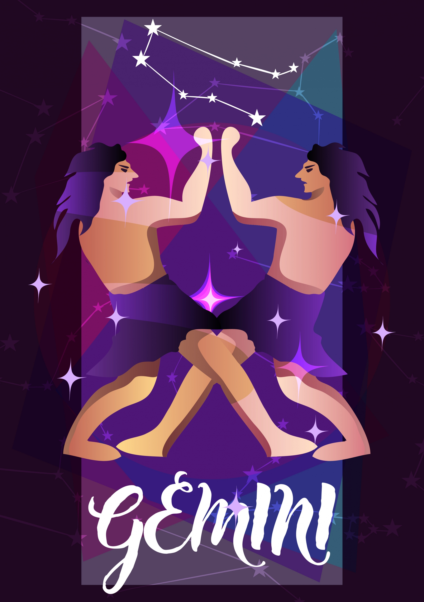

TWINS | MAY 21 - JUN 20
CURIOUS, AFFECTIONATE, KIND
| Element: Air | Polarity : Positive |
| Quality : Mutable | Ruling Planet: Mercury |
| Spirit Color : Yellow | Lucky Gem : Tiger's Eye & Emerald |
| Flower : Lavender & Lily of the Valley | Top Love Matches : Aries & Leo |
| Ruling House : Third |
Smart, passionate, and dynamic, Gemini is characterized by the Twins, Castor and Pollux, and is known for having two different sides they can display to the world. Expert communicators, Gemini is the chameleon of the Zodiac, adept at blending into different groups based on the vibe and energy they perceive. While they're also amazing at showcasing surface traits, the Gemini well runs deep, which is why the Twins are one of the Zodiac's most emotionally intelligent signs. Energetic and quick-witted, Gemini never gets stuck in the past and doesn't ruminate on what might have been. Instead, they move forward with glass-half-full optimism and an ability to always look on the bright side—and land on their feet—in nearly any situation. With a mind that's constantly racing, even when they're just quietly hanging out, the Twins never get bored. In fact, Gemini are happy keeping their own company, and can often turn their solitary daydreams into reality.
Gemini are in love with love, and they adore the ritual of it all, from those "do they like me?" butterflies to the anticipation of a back-and-forth text volley. Gemini loves dating, and the world loves Gemini. But a Gemini will eventually settle down, because this sign is incredibly loyal and steadfast once they've chosen a partner. Let's be clear, though: Steadfast isn't a code word for boring. Gemini always love to keep things fresh and are happy to try almost anything in the bedroom. They're proud of their sexuality and depend on frequent physical check-ins to keep them grounded in their body. To them, sex is a celebration of life, and Gemini loves both sex and life.
Despite their unfair rep for being two-faced, once a Gemini is in your life, they're loyal for life—but they aren't afraid to voice their opinion if they feel you're doing something they disagree with or if they perceive you as not being loyal to them. Always a sign to see all sides of the situation, Gemini may seek input from friends before going to the root of the problem. It's not gossiping—it's gathering information. And even though Gemini is easily the life of the party without trying, the Twins also have a deep emotional side that needs care and feeding. Gemini like time by themselves to read, create, daydream, and come up with other ways of sharing their gifts with the world. When a Gemini can truly tap in and share their gifts, they're an unstoppable force of energy that can motivate, inspire, and enchant the rest of the Zodiac.
"I manifest my reality."
Equipped with almost uncanny emotional intelligence, Gemini can easily read a room and know exactly what other people want to hear from them. They can easily shift their personality depending on mood, going from Friday night life of the party to Monday morning office superstar. Energetic and passionate, Gemini can breathe new life into a same-old routine and excite other people simply by their all-in presence.
That social chameleon rep can sometimes earn Gemini a reputation as two-faced. While a Gemini is all about truth, sometimes a Gemini is more likely to talk to others about a conflict instead of approaching the person who's actually causing it. The Twins have also been known to stir up gossip just to keep things exciting.
Intelligence. Gemini is quick-witted and can read a room or situation in an almost supernatural way. Without saying very many words, a Gemini soon knows who has an agenda, who's a good ally, and who may need someone to bolster them up. Because of this, Gemini is an amazing friend, leader, and person everyone should be lucky to have in their lives.
Kendrick Lamar, Azealia Banks, Iggy Azalea, Angelina Jolie, Natalie Portman